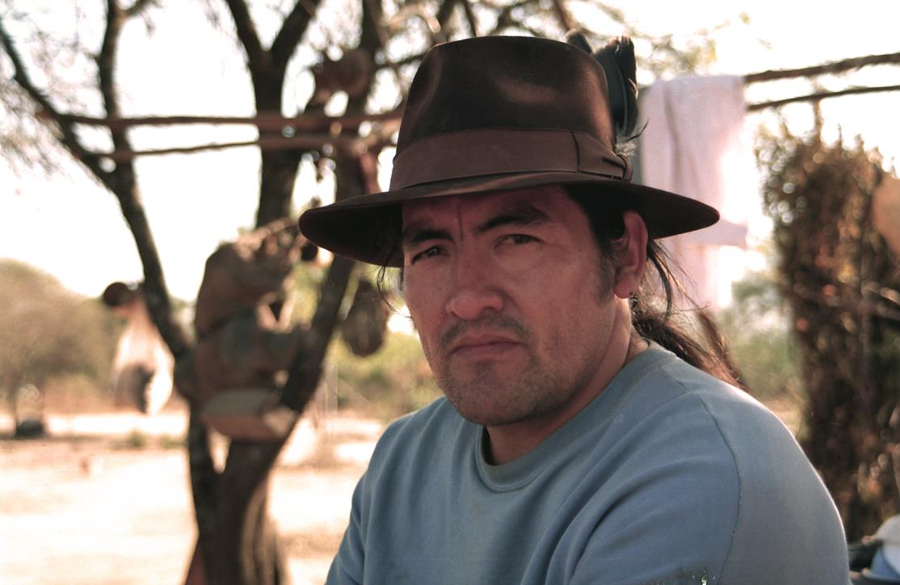

Sobre mi

Soy artista plástico de la nación milenaria del Chaco salteño: los wichi con amor por la tierra, por el río, por los árboles, por los niños, los ancianos, la educación, los buenos caminos, las buenas voluntades, los pájaros, los yaguareté, las corzuelas, el suri, el zorro, el carancho, el yacaré, el chaguar, las yikas y todas las cosas que forman parte de mi comunidad.
Comencé mis estudios en la provincia de córdoba en la facultad de artes en la Universidad Nacional de Córdoba, llevo mas de 30 años de trayectoria en todo el pais.